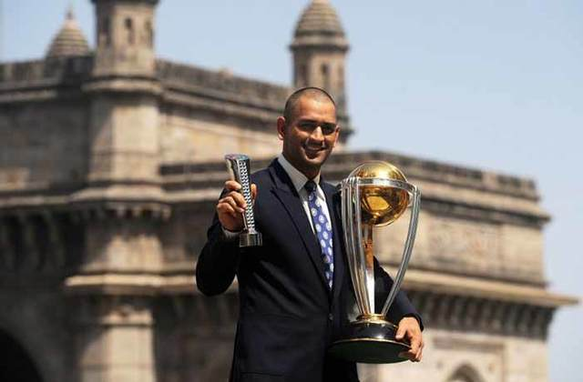
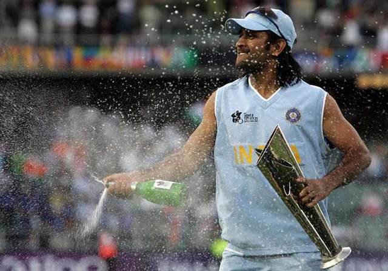
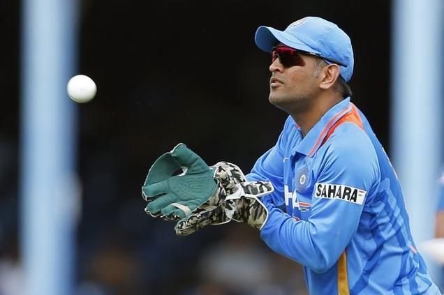
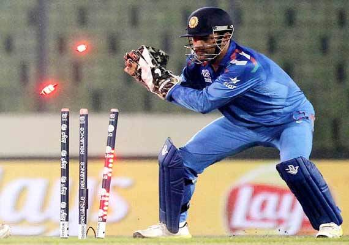
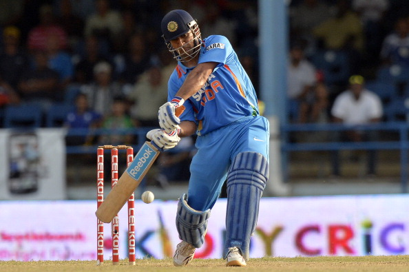

It is truly a sad day for Indian Cricket as the Captain Cool, Mahendra Singh Dhoni steps down from captaincy, in a move that has shocked the cricketing world, with fans from as far as Australia speaking up about their favorite Dhoni moments in the years he was a captain. While experts believe that this is a good move, as it allows Virat Kohli to settle into the role of an ODI captain ahead of the 2019 World Cup, and allows Dhoni to return to his swashbuckling and devastating batsman-ship, it still saddens us that one of the greatest captains of the Indian Cricket Team is now giving up the skipper's cap for the younger generation. Today, after being named India's most successful captain, to recently having Bollywood make a biopic on his life, Dhoni looks to be at the top of the world, and he is wise enough to fold when he's ahead.
Let's take a look at the greatest moments in Dhoni's career has.
1. The first captain of the Indian Cricket Team after Kapil Dev to lead us to victory
The 2011 World Cup final is etched into the minds of every cricket fan across the world, with Dhoni finishing off with a magnificent 6 to end a nail biting match. Dhoni, who by then had already craved his name in the legends of cricket, was elevated to the god like levels. This match was also Sachin Tendulkar's final World Cup match.

2. His first stint with captaincy led Indian Cricket Team to victory in the first ever ICC T20 World Cup in 2007
The heart stopping finale of the T20 World Cup against Pakistan is something people will never forget, it goes without saying how religiously Indians watch India vs Pakistan, and this being the first ever Twenty20 world championship, it was a matter of great prestige for us to win the final, especially against arch rivals. Captain Dhoni kept a calm head throughout the match and the moment right before Sreesanth caught the ball is perhaps, the slowest moment in an Indian Cricket fan's life, the kind of moments that seem to stretch into infinity, and when it's over, you wish to experience it all over again.

3. Fiery on the field, humble everywhere else
Dhoni is famous for calling out his players for slacking off, emphasizing on fielding by every player on his squad. He was also supremely humble, choosing to walk behind the team after winning the 2011 World Cup win, while the team lifted Sachin on their shoulders for a lap around the stadium, and always choosing to push his team to the forefront instead of grabbing the trophy and posing with it exclusively.

4. The Fastest Wicket-keeper Alive
Dhoni has credited Adam Gilchrist as being an inspiration on his wicket keeping, and while the Australian legend's tales of amazement are many, cricket fans are not likely to forget Dhoni's extremely quick reflexes. Named The Fastest Wicketkeeper Alive by fans, a play on DC Comics character The Flash, Dhoni's antics as the wicketkeeper deserves a whole new article.

5. Dhoni bought life back to Indian Cricket
Dhoni leaves a legacy of going on to achieve amazing heights with the team and his strategy. The average Indian cricket fan was becoming increasingly frustrated around 2005, when Dhoni, after a horrendous debut, knocked his way into the eyes of the public when he knocked a 148 against Pakistan. It was after this fantastic knock that Indian cricket was back on the minds of the average Indian, coming to a head by the time of the 2007 T20 World Cup and the 2011 World-Cup. While we are sure that the hardcore fans were always there, the average Indian now hopes that Virat Kohli picks up the legacy Dhoni leaves behind him, we are excited to see Dhoni settle for the Number 2 slot on the batting line up and a return of MS Dhoni, the blitzkrieg opener.
